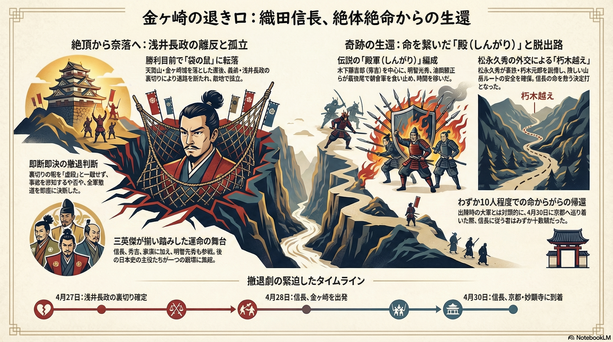

「金ヶ崎の退き口」の全体像を視覚化した総合図解資料です。信長が直面した危機の構造と、生還を可能にした主要因をまとめています。
● 絶頂から奈落へ： 朝倉攻めの勝利目前、浅井長政の離反により「袋の鼠」と化した孤立無援の状況を解説しています。プライドを捨てた信長の「即断即決の撤退判断」が最初の分岐点となりました。
● 奇跡の生還を支えた二柱： 木下藤吉郎、明智光秀、池田勝正らによる伝説の「殿軍（しんがり）」編成と、松永久秀の外交交渉によって突破口を開いた「朽木越え」の重要性を図示しています。
● 撤退劇のタイムライン： 4月27日の裏切り確定から、わずか10人程度での帰還となった4月30日の妙顕寺到着まで、歴史が動いた緊迫の4日間を時系列で整理しています。
信長、秀吉、家康という三英傑が同じ戦場で死線を越えた、日本史の特異点を一目で把握できる構成となっています。